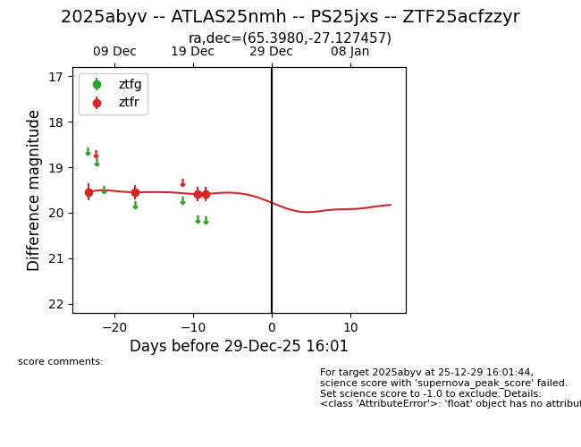
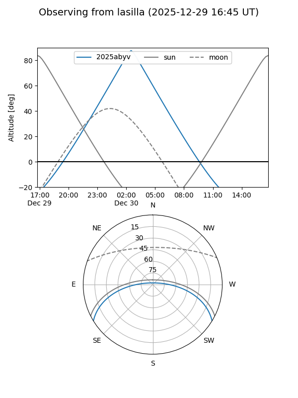
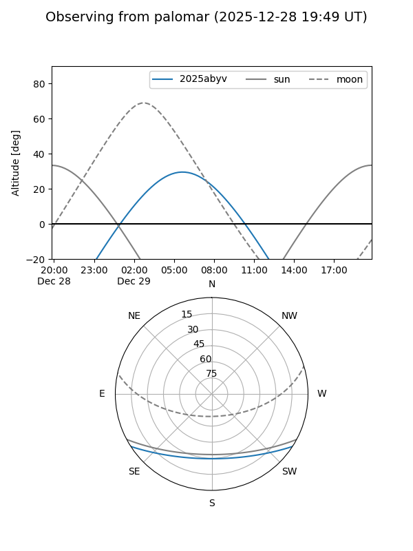

2025abyv
Target 2025abyv at 2025-12-31 18:00
Aliases and brokers:
FINK: link
Lasair: link
ALeRCE: link
TNS: link
YSE: link
alt names
ZTF25acfzzyr (ztf,fink_ztf)
2025abyv (tns,yse)
ATLAS25nmh (atlas)
PS25jxs (panstarrs)
Coordinates:
equatorial (ra, dec) = 65.3980,-27.12746
equatorial (HMS+DMS) = 04:21:35.52,-27:07:38.84
galactic (l, b) = (225.6143,-43.60504)
Flags:
Photometry:
last ztfr=19.59
4 ztfr detections
Lightcurve

Visibility


Additional plots